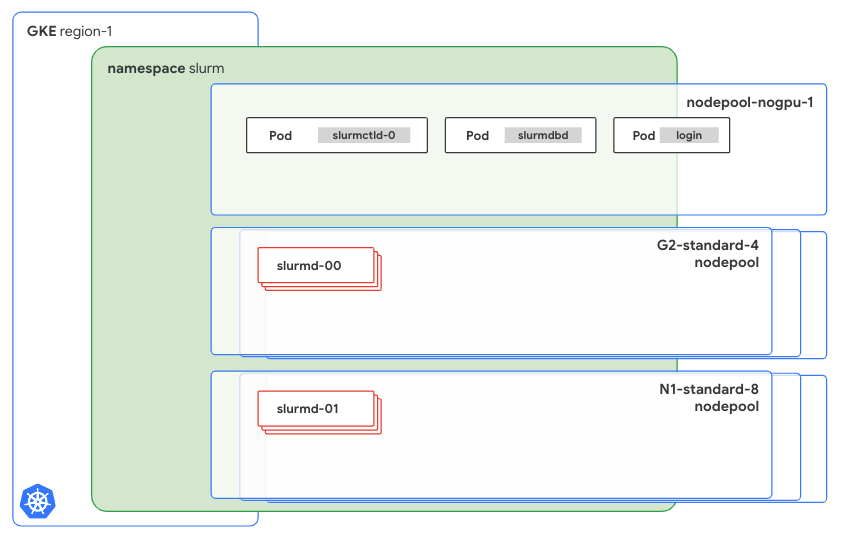

Slurm on GKE
Introduction
This guide shows you how to deploy Slurm on a Google Kubernetes Engine (GKE) cluster.
Slurm (formerly known as Simple Linux Utility for Resource Management) is a powerful open-source workload manager that’s designed for Linux and Unix-like systems. It's used extensively in high performance computing (HPC) environments, including many of the world's supercomputers and large computer clusters.
Slurm uses a centralized manager (slurmctld) to monitor resources and work, with an optional backup manager for fault tolerance. Each compute server (node) runs a slurmd daemon to execute work. An optional slurmdbd can record accounting information for multiple Slurm-managed clusters. More information about the Slurm architecture can be found on the SchedMD documentation website.
This guide is intended for platform administrators in an enterprise environment who are already managing Kubernetes or GKE clusters, and who need to set up Slurm clusters for AI/ML teams on Kubernetes. This guide is also for AI/ML startups that already use Kubernetes or GKE to run their workloads, such as inference workloads or web apps, and want to use their existing infrastructure to run training workloads with a Slurm interface. AI/ML teams that are already use Slurm can continue to use a familiar interface while onboarding on to Kubernetes or GKE.
Benefits
Because Slurm is a workload orchestrator, it might seem counterintuitive to run it on Kubernetes–and this scenario is not a common practice. However, a team in an enterprise or an AI startup might run Slurm on Kubernetes for the following reasons:
- To avoid the sparse allocation of scarce resources, such as GPUs, between different infrastructures–for instance, splitting GPUs between Kubernetes clusters and Slurm clusters running on VMs.
- To help teams that are familiar with Slurm, and less familiar with Kubernetes, learn how to use Kubernetes more quickly. These teams typically already use Kubernetes to run other types of workloads, such as inference workloads, web apps, or stateful apps.
This solution lets a platform administrator team with previous Kubernetes experience, or an AI/ML team with little-to-no Kubernetes experience, set up the cluster with ready-to-use Terraform modules.
Document scope
This solution, and the Slurm setup presented here, does not support all the Slurm features, and is not intended to be used outside the AI/ML domain. This guide is also not a recommendation document about how or when to use Slurm for HPC workloads.
The following topics are also out of scope for this guide:
- How to integrate the various combinations of the Google Cloud VM types.
- How to dynamically split Kubernetes nodes between two orchestrators.
- How to do any advanced configuration that’s different from the one that’s presented in the introduction.
If you are searching for a guide or an automation tool that can help you set up Slurm on Google Cloud, with a focus on HPC workloads, we recommend that you use the Google Cloud Cluster Toolkit.
Solution architecture
The implemented architecture is composed of multiple StatefulSets and Deployments in order to cover the different Slurm components. The following diagram shows a Slurm control plane and a data plane that are running in GKE.

Although the function of each component won’t be described in detail, it’s important to highlight how each component is configured and how it can be customized. The previous diagram identifies two main components: the Slurm control plane and the data plane.
- The Slurm control pane is hosted on
nodepool-nogpu-1, and it contains at least three services: Theslurmctld-0Pod runsslurmctld, which is piloted by theslurmctldStatefulSet.- The
slurmdbdPod, which is controlled by a Deployment. - The login Pod.
- The data plane consists of two different
slurmd-Xinstances: - The first instance, called
slurmd-00, is hosted on theG2-standard-4node pool. - The second instance, called
slurmd-01, is hosted on theN1-standard-8node pool.
Control plane
Before proceeding further, review the Terraform module configuration for this part of the Cluster.
module "slurm-cluster-001" {
source = "../modules/slurm-cluster/"
namespace = "slurm"
namespace_create = true
cluster_config = {
name = "linux"
image = "IMAGE_URL_FROM_ARTIFACT_REGISTRY"
database = {
create = true
storage_size_gb = 1
host = "mysql"
password = "SET_HERE_A_BASE64_ENCODED_PASSWORD"
}
storage = {
size_gb = 100
type = "filestore"
mount_path = "/home"
}
munge = {
key = "PUT_HERE_YOUR_KEY"
}
}
By using namespace and namespace_create, you can specify where to run the control plane. Creating the namespace can be automatic if namespace_create is set to true.
The cluster_config block, which the previous example code passes directly in the module for readability, specifies the following:
- All the customizable options of the solution.
- The container image to use to run the cluster.
- The database.
- The storage.
- Munge parameters.
The database block can auto-create a new MariaDB instance, which will be hosted on the cluster with an external volume. Alternatively, you can provide credentials to connect to a compatible external MySQL service, such as CloudSQL.
The storage block specifies where to mount the shared filesystem in the data plane pods (slurmd) that will execute the jobs. The configuration of all the Slurm components, except for the database, will auto-mount on the specified shared filesystem.
The munge block specifies the Munge key that’s used for the secure communication between the cluster nodes. If you’re not familiar with it or with any previous Slurm setup, and you want to create a new one, the Munge key must be 32 kB. The Munge client has a specific command to create a Munge key, and the SchedMD documentation also describes another approach to creating a Munge key by using dd.
For more information related to the image, see the Image section of this document.
Data plane and worker nodes
The following streamlined configuration for a new set of worker nodes requires only a few parameters:
# example - 1
module "slurm-workers-001" {
source = "../modules/slurm-nodeset"
name = "slurmd"
config = {
type = "g2-standard-4"
instances = 2
namespace = module.slurm-cluster-001.namespace
image = var.config.image
}
}
# example - 2
module "slurm-workers-002" {
source = "../modules/slurm-nodeset"
name = "slurmd1"
config = {
type = "n1-standard-8"
instances = 1
namespace = module.slurm-cluster-001.namespace
image = var.config.image
accelerator = {
type = "nvidia-tesla-t4"
count = 2
}
}
}
The config block specifies nodeset names. To name nodesets, we recommend that you use names such as slurmd, slurmd1, or slurmd2. For more information about this topic, see the Limitations section of this document.
In addition to nodeset names, you can use the config block to configure the following:
- The type of the instance, which includes all the instance types that GKE supports. For example, N1, C2, A2, or A3.
- The number of instances to dedicate to Slurm.
- The namespace.
- The address of the Slurm image.
The previous example creates two nodesets: the first nodeset is created on the g2-standard-4 instances, and the second one is created on the n1-standard-8 instances. Although the configurations for both instance types are similar, N1 instances require some additional parameters because they are machines that are not bound to a specific GPU version. Because you can choose the GPU before the machine is created–for example, when you choose the n1-standard machine type–the Terraform module requires you to specify the number of GPUs and the related type.
Limitations
Because Slurm is a workload orchestrator, it overlaps with some of the components, scope, and features of Kubernetes. For example, both Slurm and Kubernetes can scale up a new node to accommodate requested resources, or allocate resources within each single node.
Although Kubernetes shouldn’t limit the number of StatefulSets that can be added to the Slurm cluster, this solution addresses DNS names and pointing by injecting the names of the StatefulSets directly into the manifests. This type of injection supports up to five static names, which include the three StatefulSets and two additional system domains.
Because of this limitation, we recommend that you have no more than three nodesets per cluster and to always use nodeset names such as slurmd, slurmd-1, or slurmd-2.
Image
The provided image configuration files, which are available in the image directory of the repository, contain all the needed Slurm binaries. It's a best practice to have one container image for each purpose, and Google recommends that you create different images for each purpose before you put this architecture in production.
The provided Dockerfile and the docker-entrypoint.sh file are used to create the base Ubuntu-based image for the setup. Although it can be used, it's not maintained and should be considered only for use in experimentation and testing.
Another best practice is to tag your images with the NVIDIA driver version that you will install. Doing so will help you manage different images because the tags match the NVIDIA driver that’s installed onto your GKE cluster.
Notes and requirements
The current version of this guide does not address running the login pod with users different from root.
The following are required to be present, configured or available:
- terraform v1.9.3 or newer
- docker 20.10.21 or newer
- kubectl
- A Google Cloud organization
Infrastructure and GKE
This section describes the steps for creating and storing the container image.
Set up your environment
In this tutorial, you use Cloud Shell to manage resources that are hosted on Google Cloud. Cloud Shell is preinstalled with the software that you need for this tutorial, including kubectl, the Google Cloud CLI, Helm, and Terraform.
To set up your environment with Cloud Shell, follow these steps:
1. In the Google Cloud console, launch a Cloud Shell session by clicking Activate Cloud Shell. This launches a session in the bottom pane of the Google Cloud console.
2. Set environment variables.
export PROJECT_ID=YOUR_PROJECT_ID
export REGION=europe-west3
Replace YOUR_PROJECT_ID with your Google Cloud project ID.
3. Set the default environment variables.
gcloud config set project ${PROJECT_ID}
4. Clone the code repository.
git clone https://github.com/GoogleCloudPlatform/ai-on-gke
Create your cluster infrastructure
In this section, you run a Terraform script to create a private, highly available, regional GKE cluster.
The Terraform module will also create a new project and anything that might be needed to set up the environment described in this guide. If you already have a GKE cluster where you can test the Slurm installation, you can skip this step.
5. Initialize Terraform.
cd slurm-on-gke
cd infrastructure
terraform init
6. Create the terraform.tfvars file with your own values.
A terraform.tfvars file should be provided with all the values for the required variables. In the file, enter your own values as follows:
impersonate_service_account = "YOUR_SERVICE_ACCOUNT_ID" <-- if you are using one
region = "europe-west3"
project_id = "YOUR_PROJECT_ID"
billing_account_id = "YOUR_BILLING_ACCOUNT_ID"
folder_id = "folders/FOLDER_ID"
Note: Ensure your selected region or zone offers GPU availability. Consult the Google Cloud documentation for a complete list.
7. After you fill out the file, use the following command to apply the Terraform configuration and create the infrastructure.
terraform apply
When you are prompted, type yes. It might take several minutes for this command to complete and for the cluster to show a ready status.
Terraform creates the following resources:
- A Google Cloud project.
- A VPC network, a private subnet for the Kubernetes nodes, and a proxy-only subnet for the load balancers.
- A firewall rule to open the SSH protocol from the Identity-Aware Proxy (IAP) ranges.
- A router to access the internet through NAT.
- An Artifact Registry repository to host the Slurm image.
- A private GKE cluster in the
europe-west3region. - One node pool with autoscaling enabled (1-2 nodes per zone, 1 node per zone minimum)
- One node pool with enabled autoscaling and GPUs (1-2 nodes per zone, 1 node per zone minimum)
- Two ServiceAccount with logging, monitoring permissions, and Artifact Registry read permissions.
- Google Cloud Managed Service for Prometheus configuration for cluster monitoring.
The output is similar to the following:
...
Apply complete! Resources: 39 added, 0 changed, 0 destroyed.
An additional, commented-out Terraform configuration is already written over the infrastructure/slurm.tf file. The additional configuration is an example configuration for a g2-standard-4 node pool.
Create the image
In this section, you build and store the container image that you will use to deploy Slurm over the newly created or provided GKE cluster.
To build the container image, use the following commands:
cd .. # (you were in the infrastructure directory)
cd image docker build -t europe-west3-docker.pkg.dev/$PROJECT_ID/slurm/slurmd:535 .
docker push europe-west3-docker.pkg.dev/$PROJECT_ID/slurm/slurmd:535
The output is similar to the following:
...
The push refers to repository [europe-west3-docker.pkg.dev/YOUR_PROJECT_ID/slurm/slurmd]
df1644670bb2: Pushed
74f700e9690e: Pushed
676e6ba12678: Pushed
578df7510db0: Pushed
6551dcc8d929: Pushed
ddcaaa531045: Pushed
98c2ee5d21b6: Pushed
866b7df6f372: Pushed
139722e64731: Pushed
87c242b383a9: Pushed
1b9b7340fee7: Pushed
535: digest: sha256:ced97f7cb5d0eba7114a1909c2he2e2ke21a6db1b36669a41f34a3
size: 2632
Note the address of your container image because it will be requested in the following steps.t The address should be similar to the following:
europe-west3-docker.pkg.dev/$PROJECT_ID/slurm/slurmd:535
Deploy Slurm
In this section, you deploy the Slurm cluster over the newly created or provided GKE cluster.
1. Return to the repository root directory.
cd .. # (we were in the image directory)
2. Create the terraform.tfvars file with your own values.
A terraform.tfvars file should be provided with all the values for the required variables. In the file, enter your own values as follows:
region = "europe-west3"
project_id = "YOUR_PROJECT_ID"
cluster_name = "cluster-1"
config = {
name = "linux"
image = "europe-west3-docker.pkg.dev/YOUR_PROJECT_ID/slurm/slurmd:535"
database = {
create = true
storage_size_gb = 1
host = "mysql"
password = "SET_HERE_A_BASE64_ENCODED_PASSWORD"
}
storage = {
size_gb = 100
type = "filestore"
mount_path = "/home"
}
munge = {
key = "PUT_HERE_YOUR_KEY"
}
}
impersonate_service_account = "YOUR_SERVICE_ACCOUNT_ID" <-- if you are using one
3. Gather the credentials for the GKE cluster.
gcloud container clusters get-credentials cluster-1 --region europe-west3
4. Initialize the Terraform configuration and apply it.
terraform init
terraform apply
When you are prompted, type yes. It might take several seconds for this command to complete and for the cluster to show a ready status.
The output is similar to the following:
...
Apply complete! Resources: 17 added, 0 changed, 0 destroyed.
5. Check that the Slurm cluster is being deployed.
kubectl get pods -n slurm -w
NAME READY STATUS RESTARTS AGE
login-96bffd678-nbqwp 0/1 Pending 0 32s
mysql-746bcd47c6-mxd4f 1/1 Running 0 2m28s
slurmctld-0 0/1 Pending 0 2m29s
slurmd1-0 0/1 Pending 0 2m27s
slurmdbd-7b67cf9b54-dj7p4 0/1 ContainerCreating 0 31s
After deployment is complete, the output is similar to the following:
kubectl get pods -n slurm
NAME READY STATUS RESTARTS AGE
login-96bffd678-nbqwp 1/1 Running 0 4m12s
mysql-746bcd47c6-mxd4f 1/1 Running 0 6m8s
slurmctld-0 1/1 Running 0 4s
slurmd1-0 0/1 Running 0 19s
slurmdbd-7b67cf9b54-dj7p4 1/1 Running 0 4m11s
6. Verify that the Slurm cluster is working properly by logging in to the login pod.
kubectl -n slurm exec -it login-96bffd678-nbqwp -- bash
root@login:/opt# sinfo
PARTITION AVAIL TIMELIMIT NODES STATE NODELIST
all\* up infinite 79 idle~ slurmd-[0-39],slurmd1-[1-39]
all\* up infinite 1 idle slurmd1-0
1gpunodes up infinite 40 idle slurmd-[0-39]
2gpunodes up infinite 39 idle~ slurmd1-[1-39]
2gpunodes up infinite 1 idle slurmd1-0 root@login:/opt
Clean up
To avoid incurring charges to your Google Cloud account for the resources that you used in this tutorial, either delete the project that contains the resources, or keep the project and delete the individual resources.
Delete the project
The easiest way to avoid billing is to delete the project that you created for the tutorial.
Caution: Deleting a project has the following effects:
- Everything in the project is deleted. If you used an existing project for the tasks in this document, deleting the project also deletes any other work that you've done in the project.
- Custom project IDs are lost. When you created this project, you might have created a custom project ID that you want to use in the future. To preserve the URLs that use the project ID, such as an appspot.com URL, delete selected resources inside the project instead of deleting the whole project.
If you plan to explore multiple architectures, tutorials, or quickstarts, reusing projects can help you avoid exceeding project quota limits.
- In the Google Cloud console, go to the Manage resources page.
Go to Manage resources. - In the project list, select the project that you want to delete, and then click Delete.
- In the dialog, type the project ID, and then click Shut down to delete the project.
Delete the individual resources
If you used an existing project and you don't want to delete it entirely, delete the
individual resources.
1. Run the terraform destroy command to delete all the Slurm resources that you created in the previous steps:
cd slurm-on-gke terraform destroy
If you used an existing cluster, you can skip the following step.
2. Run the terraform destroy command on the infrastructure directory:
cd infrastructure
terraform destroy
This step deletes all the resources that you created previously: the GKE cluster, the VPC network, the firewall rules, and the Google Cloud project.
License
- The use of the assets contained in this repository is subject to compliance with Google's AI Principles
- See LICENSE
- This project is adapted from the Stack HPC - slurm k8s cluster project by Giovanni Torres. Copied or derived files from the original repository, as specified within their headers, are licensed under the original MIT license and copyrighted by Giovanni Torres.